New scroller panel component
Use org.pushingpixels.flamingo.api.common.JScrollablePanel class to add horizontal or vertical scrolling around large content. You construct it by passing the view and the ScrollType - either HORIZONTALLY or VERTICALLY (the scroll type cannot be changed once the component has been constructed). When needed, the component will show the scroller buttons - just the same way as JScrollPane shows the scroll bars. Moving the mouse over a scroller button (when it's visible) starts auto-scrolling the view in the matching direction. To turn off the auto-scrolling and do the scrolling only on button press call JScrollerPanel.setScrollOnRollover(false) API.
The breadcrumb bar shows horizontal scrolling:
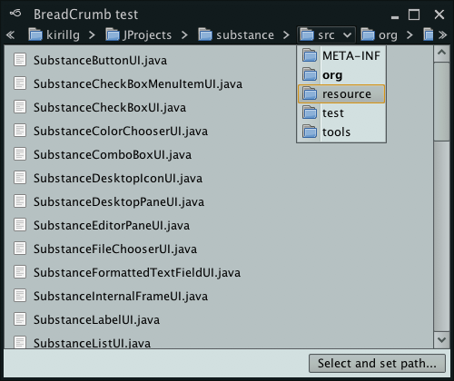The popup menu shows vertical scrolling:
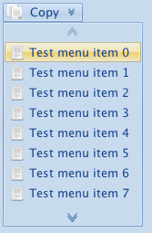 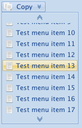New color selector popup
org.pushingpixels.flamingo.api.common.popup.JScrollablePanel is a flexible color selector popup that you can associate with the command buttons that control the color selection of elements in your application. Here is how a color selector popup looks like under left-to-right and right-to-left orientation:
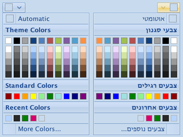To associate a color selector popup with the specific command button (that has a popup area), return an instance of JColorSelectorPopupMenu from the PopupPanelCallback. This class extends the JCommandPopupMenu and allows adding command menu buttons, command toggle menu buttons and separators. The screenshot above shows two command menu buttons in the color selector popup - one at the top and another at the bottom.
In adition, the JColorSelectorPopupMenu provides the following APIs to add color selector sections:
- addColorSection that gets 10 colors. The "Standard Colors" in the screenshot above is an example.
- addColorSectionWithDerived that gets 10 primary colors. Each primary color will show a column of 5 derived colors below it. The "Theme Colors" in the screenshot above is an example.
- addRecentSection. Shows the LRU list of the recently selected colors.
A JColorSelectorPopupMenu is created with an instance of ColorSelectorCallback. This interface has two methods:
- onColorRollover(Color) - allows your application to show the live preview of the color under the mouse. When called with null, the application needs to unset the live preview.
- onColorSelected(Color) - called when the user selects one of the colors in the popup.
The selector sections added with the APIs above will be automatically wired to the color selector callback that you pass in the constructor. If your design requires displaying additional menu buttons to select color, these will need to be explicitly wired to the callback and the list of recently selected colors.
When a color is selected in both custom menu buttons, the list of recently selected colors can be updated - so that the user can quickly choose it again in the future. The relevant APIs in the JColorSelectorPopupMenu are:
- static getRecentlyUsedColors(). The last element in the list is the most recently selected.
- static addColorToRecentlyUsed() adds the specified color to the list. If the color is already there, it is moved to the end of the list.
Right to left (RTL) support
Full support for RTL orientation for all components.
Ribbon with one of the buttons showing a rich tooltip:
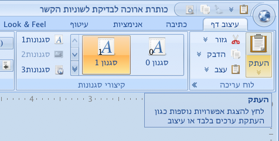Command button in a ribbon showing a popup menu with embedded scrollable command button panel:
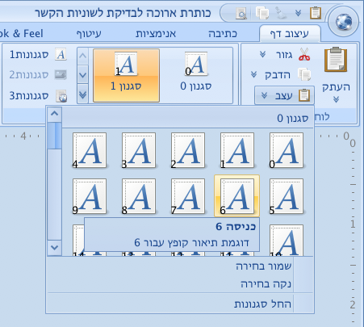Toggle menu buttons
org.pushingpixels.flamingo.api.common.JCommandToogleMenuButton provides support for toggleable command buttons that can be placed in popup menus. Here is a sample popup menu with four toggle menu buttons that belong to the same toggle button group (single selection):
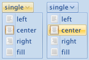Note that the second option is selected and has a selection visual painted behind its icon. And here is a similar popup menu, but this time with multi-selection group (where toggle menu buttons are not associated with any toggle button group):
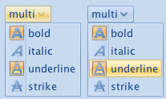Dismissing command popup menus
If a command popup menu contains a set of toggle buttons that control a set of boolean options / preferences, dismissing the menu after a single button has been clicked (selected toggled) is a bad user experience if the user wanted to change multiple settings. Here is an example of such a menu:
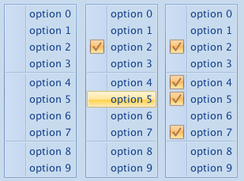To prevent the auto-dismissal, call the new JCommandPopupMenu.setToDismissOnChildClick(false) API. This way the menu will stay up until the user clicks anywhere outside it or hits the Escape key.
Dock icon for ribbon frame on Mac
The new JRibbonFrame.setApplicationIcon(ResizableIcon) API supersedes the setIconImages(List<Image>) API. On the Mac platform, in addition to setting the icon on the application menu button, it also changes the dock icon image (with Application.setDockIconImage). This provides much better integration with the native Mac OS X application environment:
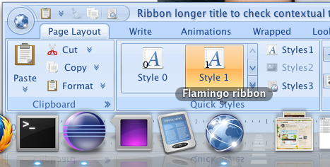Dynamic resize of ribbon components
JRibbonComponent.setResizingAware(true) turns on the dynamic resizing on for the specific component. When the ribbon containing resize-aware components becomes smaller, the wrapped component will hide the caption and icon as necessary before the band will go to the collapsed state.
The screenshots below show the same three comboboxes wrapped in JRibbonComponents with icons and captions in three different states based on the available width:
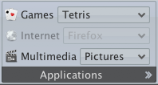 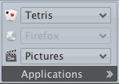 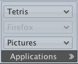Office Black 2007 skin
Substance 6.1 completes the collection of skins that can be used on the ribbon by adding Office Black 2007 skin to the existing Office Silver 2007 and Office Blue 2007 skins. Here is how the ribbon looks under Office Black 2007 skin:

This skin lives (as all others) in the org.pushingpixels.substance.api.skin package and can be used with the following:
- SubstanceLookAndFeel.setSkin(new OfficeBlack2007Skin())
- SubstanceLookAndFeel.setSkin("org.pushingpixels.substance.api. skin.OfficeBlack2007Skin")
- -Dswing.defaultlaf=org.pushingpixels.substance.api. skin.SubstanceOfficeBlack2007LookAndFeel
- UIManager.setLookAndFeel(new SubstanceOfficeBlack2007LookAndFeel())
- UIManager.setLookAndFeel("org.pushingpixels.substance.api. skin.SubstanceOfficeBlack2007LookAndFeel");
Better integration with Substance skins
Use the latest version of Substance and Substance Flamingo plugin to achieve much better ribbon visuals under different Substance skins.
Here is the ribbon under Business Black Steel skin:

And the same ribbon under Dust skin:

And the same ribbon under Dust Coffee skin:

And the same ribbon under Gemini skin:

And the same ribbon under Twilight skin:

The ribbon also looks much better under other Substance skins such as Autumn:

and Business: